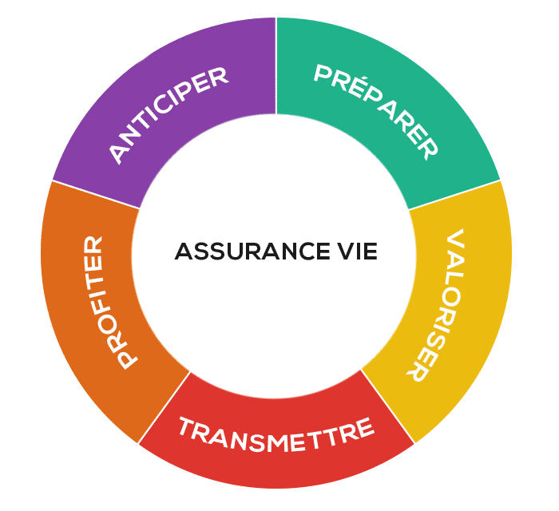

L'assurance-vie
Définition de l'assurance-vie ou enveloppe d'investissement :
Comme son nom ne l’indique pas du tout, l’assurance-vie n’est pas une assurance, enfin pas vraiment. Ce n’est pas non plus un placement réservé aux personnes en fin de vie. Nous ne savons pas qui a trouvé ce nom, mais il y avait sans doute mieux à faire sur ce coup. En fait, l’assurance-vie est un placement de long-terme .
Comment fonctionne l'assurance-vie ?
C’est simple. L’assurance-vie fonctionne comme une enveloppe , une enveloppe dans laquelle vous déposez de l’argent, de l’argent qui sert à investir dans des actifs. Ces actifs peuvent être un fonds en euros, des actions, des obligations, des fonds de placement, ou encore des matières premières. L’assurance-vie n’est donc rien de plus qu’un contenant, une poche. L’important, ce n’est pas l’enveloppe, mais les actifs que vous mettez dedans. Si ce que vous mettez dans votre assurance-vie vous rapporte de l’argent, des plus-values, vous payez des impôts dessus selon un barème spécifique, c’est-à-dire des taux d’imposition qui sont propres à l’assurance-vie. C’est la raison pour laquelle on dit que l’assurance-vie est une « enveloppe d’investissement » , dans le sens où c’est une enveloppe avec une fiscalité particulière derrière. Les assureurs parlent d’ailleurs parfois de contrat d’assurance-vie, pour dire, en gros, qu’il s’agit d’un produit d’épargne adossé à un contrat. De notre côté, pour simplifier, nous préférons parler tout simplement d’assurance-vie.
Que peut-on mettre dans cette enveloppe d'investissement ?
L’assurance-vie ou enveloppe d'investissement, permet de placer de l’argent dans :
- des fonds en euros , garantis, sécurisés, ceinture et bretelles ;
- des unités de compte , c’est-à-dire des supports d’investissement divers et variés, dont le cours peut fluctuer, à la hausse comme à la baisse, et qui ne garantissent donc pas votre capital.
Par l’intermédiaire des unités de compte, il est possible d’acheter des ETF, qui permettent ensuite d’investir, d’effectuer des versements dans :
- un fonds en euros , c’est-à-dire un fonds à capital garanti, sécurisé ;
- des actions , comme celles de Danone ou d’Amazon ;
- des indices boursiers , comme le CAC 40 ou le S&P 500 ;
- des obligations , émises par des États ou des entreprises ;
- des matières premières , comme l’or ou le pétrole.
Quand une assurance-vie permet d’investir à la fois dans un fonds en euros et dans des unités de compte, on dit qu’elle est « multisupport » . Ce n’est pas le cas de toutes les assurances-vie, mais c’est le cas de l’assurance-vie Yomoni Vie.
Qui peut bénéficier de cette enveloppe d'investissement ?
En France, pour souscrire à un contrat d’assurance-vie, il faut : être majeur capable (les parents peuvent souscrire pour le compte de leur enfant) ; être résident fiscal français (les non-résidents avec la nationalité française, peuvent détenir une assurance-vie mais ne peuvent pas y souscrire depuis l’étranger). Vous pouvez détenir plusieurs assurances-vie, dans le même établissement, ou dans plusieurs établissements différents. Où repose l’argent Sans surprise, les assurances-vie sont proposées par des assureurs. Ce sont eux qui hébergent votre argent. En France, les plus connus sont CNP Assurance, le Crédit Agricole (Prédica), et les assurances du Crédit mutuel. Chez Yomoni, nous travaillons avec Suravenir, l’assureur du Crédit mutuel Arkéa, l’argent que vous confiez à Yomoni repose dans les coffres de Suravenir.
Les impôts sur investissement
La fiscalité, c’est compliqué. Dans le cas de l’assurance-vie, vous ne payez des impôts que sur vos plus-values et uniquement au moment où vous retirez de l’argent. Dit autrement, ce que vous avez déposé sur votre assurance-vie n’est pas imposé, ce sont les gains que vous avez réalisés qui le sont, c’est-à-dire tout ce que vous avez touché en plus de vos versements.
Par exemple, si vous déposez 10 000 € sur votre assurance-vie et que votre épargne atteint 12 000 € un an plus tard, votre plus-value sera alors de 2 000 €. C’est sur cette somme de 2 000 € que vous allez payer des impôts, pas sur vos 10 000 € de départ. Le pourcentage d’impôts que vous allez payer dépend quant à lui du temps écoulé entre la date d’ouverture de votre contrat d’assurance-vie et la date à laquelle vous retirez tout votre argent ou une partie de vos économies.
Quand vous retirez de l’argent de votre assurance-vie, deux fiscalités, deux impositions sont possibles sur cette enveloppe. C’est vous qui choisissez, au moment de votre retrait, entre : le prélèvement forfaitaire unique (PFU), c’est-à-dire le taux propre à l’assurance-vie ; le barème progressif de l’impôt sur le revenu, qui s’applique déjà à votre salaire. Imposition au prélèvement forfaitaire unique (PFU) Depuis le 27 septembre 2017, le gouvernement d’Édouard Philippe a instauré un prélèvement forfaitaire unique, qui s’élève à 30 %. La dégressivité de l’imposition en fonction du temps disparaît donc, mais uniquement pour les gains engendrés par les nouveaux versements, c’est-à-dire ceux effectués à partir du 27 septembre 2017. Il faut donc distinguer deux cas.
Versements avant le 27 septembre 2017
Les gains réalisés, grâce aux versements effectués sur votre assurance-vie avant le 27 septembre 2017, restent soumis au prélèvement forfaitaire libératoire, au delà de l’abattement annuel de 4 600 € (9 200 € pour un couple). En gros, rien ne change dans ce cas là, à l’exception des prélèvements sociaux, qui passent de 15,5 % à 17,2 %. Seul l’âge de votre contrat d’assurance-vie au moment de votre retrait importe. Voir la réglementation officielle.
Versements à partir du 28 septembre 2017
Dans ce cas, la fameuse flat tax s’applique. Les gains réalisés, grâce aux versements effectués sur votre assurance-vie à partir du 28 septembre 2017, sont soumis au prélèvement forfaitaire unique, au delà de l’abattement annuel de 4 600 € (9 200 € pour un couple).
Le calcul de l’imposition se fait donc en deux temps : vous déduisez d’abord votre abattement, puis vous appliquez le taux d’imposition qui va bien sur ce que vous retirez au-delà de votre abattement, en plus. Notez cependant que les abattements ne concernent pas les prélèvements sociaux. En plus de l’âge de votre contrat au moment du retrait, un autre paramètre entre ici en ligne de compte — simplification oblige. Il s’agit du montant total de vos versements sur l’ensemble de vos contrats d’assurance-vie, pas uniquement sur votre assurance-vie Yomoni. Pour le dire vite, les versements correspondent à ce que vous avez déposé sur vos assurances-vie, ce que vous y avez versé, sans tenir compte des gains, des plus-values réalisées.
Abattement au-delà de 8 ans
Si votre assurance-vie a plus de 8 ans, vous bénéficiez d’un abattement de 4 600 € par an sur vos gains. Vous pouvez donc retirer jusqu’à 4 600 € de plus-value par an, sans payer d’impôt dessus. Au delà de ces 4 600 € d’abattement, vous serez imposé — toujours sur vos plus-values et uniquement vos plus-values — à hauteur de :
- 17,2 % de prélèvements sociaux ;
- 7,5 % de prélèvement forfaitaire.
Imposition au barème de l’impôt sur le revenu
Si le prélèvement libératoire propre à l’assurance-vie ne vous arrange pas, vous pouvez
demander à ce que les plus-values engendrées par votre assurance-vie rentrent dans le
barème de votre impôt sur le revenu. Vous serez alors imposé sur vos gains, au moment de
votre retrait, selon le taux propre à votre tranche d’imposition.
Si vous êtes dans une tranche d’impôts relativement basse et si vous avez de la marge par
rapport au plafond de votre tranche, ce barème peut vous avantager. C’est un calcul à faire.
Voir la réglementation officielle
Les avantages de l'assurance-vie
L’assurance-vie est l’enveloppe préférée des Français. Si vous n’en avez pas déjà une, vous devriez y songer, quel que soit votre âge.
Fiscalité dégressive
La fiscalité de l’assurance-vie s’adoucit avec le temps. Plus vous attendez, moins vous êtes imposé sur vos plus-values lorsque vous retirez de l’argent. Par exemple, pour une assurance-vie investie en unités de compte, si vous placez 5 000 € sur votre assurance-vie, et que ces 5 000 € se changent en 10 000 €, et que vous décidez de retirer le tout 8 ans plus tard, vous empocherez alors : 9 110 € (10 000-30-860).
Cette somme correspond à vos 5 000 € de départ, et vos 5 000 € de plus-value, sur lesquels vous bénéficiez d’un abattement de 4 600 € ; vous ne payez donc les fameux 7,5 % d’impôt que sur les 400 € qui restent, ce qui vous fait 30 € d’impôt au total. Hélas, cet abattement fiscal ne s’applique pas aux prélèvements sociaux (17,2 %), prélèvements sociaux que vous payez donc sur l’intégralité de vos 5 000 € de gains, ce qui représente ici un total de 860 €.
Retraits faciles depuis l'enveloppe
L’assurance-vie ne bloque pas votre argent — hors cas éxotiques de nantissement (garantie bancaire) ou de « bénéficiare acceptant », que nous n’abordons pas ici. Vous pouvez retirer l’argent placé sur une assurance-vie quand vous voulez. La fiscalité est censée vous inciter à laisser votre argent travailler sur une assurance-vie pendant au moins 4 ans, mais rien ne vous y oblige en réalité.
En cas de retrait d’argent, on dira que vous faites un « rachat partiel » de votre contrat d’assurance-vie si vous retirez une partie de votre argent ; si vous retirez tout votre argent d’un coup, on parlera alors de « rachat total ». Mais en français courant, on dira juste que vous retirez votre argent.
Transmission simplifiée de cette enveloppe
Pour les parents et les grands-parents, l’assurance-vie permet de transmettre une partie de votre patrimoine, avec une fiscalité avantageuse et un grand choix dans les bénéficiaires. Plus précisément, les sommes, les fonds versés sur votre contrat d’assurance-vie avant vos 70 ans n’entrent pas dans le calcul de votre succession, ont dit qu’ils sont « hors succession ».
Chacun des bénéficiaires que vous avez sélectionnés (dans la clause du même nom) bénéficient alors d’un abattement fiscal de 152 500 € sur les sommes reçues. Au delà, un taux forfaitaire de 20 % s’applique jusqu’à 852 500 € (152 500 + 700 000) ; ce taux passe ensuite à 31,25 % pour des montants supérieurs. Pour le dire vite, en anticipant, vous pouvez transmettre un peu plus de 150 000 € à chacun de vos héritiers, sans payer d’impôts dessus.
Les inconvénients de l'assurance-vie
Les risques de pertes liés à cette enveloppe d'investissement
Si vous placez votre argent dans un fonds en euros, par l’intermédiaire d’une assurance-vie, vous avez la garantie de ne pas perdre le moindre centime. C’est un investissement sécurisé, un placement sans risque. On dira alors que votre capital est garanti, car vous ne pouvez pas ressortir avec moins que ce que vous avez mis à l’entrée.
En revanche, si vous placez votre argent dans des unités de compte, vous achetez en fait des actifs dont la valeur peut varier à la hausse comme à la baisse d’un jour à l’autre. Dans ce cas, votre capital n’est pas garanti.
En résumé : en fonction de votre projet, optez pour le très prudent fonds en euros, ou pour un mélange de fonds en euros et d’unités de compte, si vous êtes prêt à prendre un peu plus de risque dans l’espoir d’avoir un meilleur rendement.
Un investissement impossible à transférer
Contrairement au PEA, les assurances-vie ne peuvent pas être transférées d’un établissement à un autre. Cela dit, une fois votre assurance-vie ouverte, vous bénéficiez d’un délai de rétractation de 30 jours, au cas où vous changeriez d’avis.